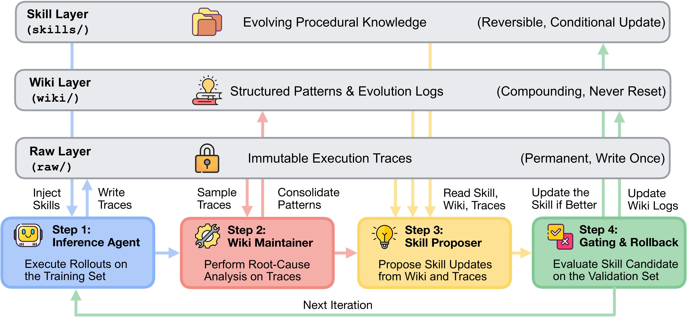
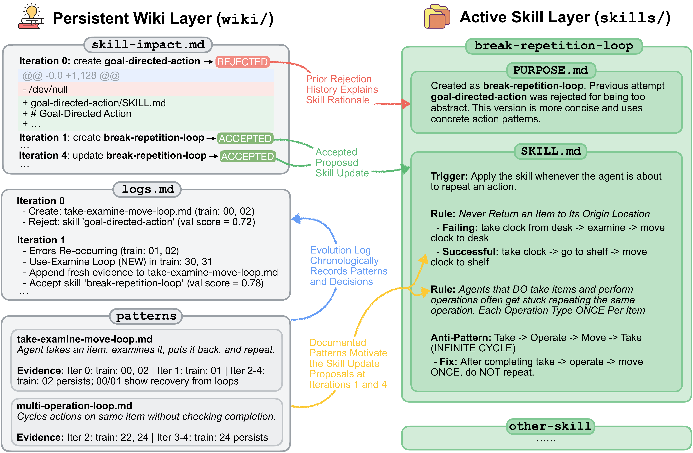
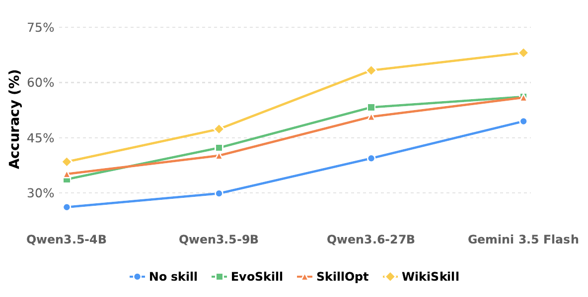

扁平提案历史（EvoSkill）
保留候选修改和评估结果，能避免部分重复，但历史仍围绕补丁组织，缺少跨轨迹整合后的独立知识表示。
WikiSkill: Compiling Agent Experience into Persistent Knowledge for Skill EvolutionLiyan Tang、Cyrus Rashtchian、Chun-Sung Ferng、Andrew Tomkins、Da-Cheng Juan、Tu Vu · Google Research / Virginia Tech · 2026-08-27
WikiSkill 的问题不是“如何把一次失败写进 Skill”，而是：跨多轮优化时，系统怎样保留对失败原因、成功策略与被拒修改的理解，同时又不把这些杂乱历史直接塞给执行 Agent。
Agent Skill 把领域知识和工作流包装成可复用文件，优点是无需更新模型参数、可审计、可移植。但自动演化 Skill 时，传统路线通常从当轮执行轨迹直接生成补丁，或把历次提案与分数堆成扁平历史。它们保存了“发生过什么”，却没有维护一个独立、持续重组的“我们已经学会什么”。随着轮次增加，证据散落在轨迹、补丁、拒绝记录和元反馈中，下一轮仍可能重新发现同一失败。
论文因此把研究对象从“技能文本”上移到“技能演化过程中的知识表示”。此前方法把经验直接压进可执行 Skill；WikiSkill 在两者之间插入持续生长的 Wiki，让原始记录、抽象知识和部署程序承担不同职责。这里的 Wiki 不是给最终 Agent 查答案的普通记忆库，而是给技能开发过程使用的研究笔记与审计账本。
与最近邻方法的差异，最适合按“经验最后被保存成什么”来比较。下面不是模块清单，而是三种不同的长期状态设计。
保留候选修改和评估结果，能避免部分重复，但历史仍围绕补丁组织，缺少跨轨迹整合后的独立知识表示。
从成功与失败轨迹抽取经验并合并为技能更新，直接服务执行，却容易让诊断证据、被拒原因与最终程序混在一起。
Raw 保真、Wiki 归纳、Skill 执行；技能可回滚，Wiki 继续累积，使后续提案能利用先前失败而不继承失败代码。
模型、工具与外层 Harness 保持固定，研究集中在可复用程序技能；这使结论更清楚，也限制了它对更广系统优化的覆盖。
Raw、Wiki、Skill 不是三个同义记忆库。它们分别追求可追溯性、跨轮次归纳与执行效率；真正有价值的是三者的写入权限和回滚规则不同。
Raw Layer 只写一次，保存完整推理、工具调用、输出与答案，是可回查的证据层。Wiki Layer 把多条轨迹整理成失败模式、成功策略、演化日志和 skill-impact 审计记录；它可以增量修改，但不会因候选 Skill 被拒而回滚。Skill Layer 则只保留当前被接受的程序性指令，并通过 PURPOSE.md 追溯到启发它的 Wiki 模式。
这构成一种不对称回滚：可执行状态必须服从验证集，知识状态则保留成功与失败。候选 Skill 若导致验证分下降，系统撤销补丁，却把提案 diff、分数和拒绝结论写回 Wiki。失败因此从“无效改动”变成“未来搜索的约束”。这比简单保存日志更强，因为 Maintainer 会把多轮证据更新到同一模式页，而不是让 Proposer 自己从无序历史中重新归纳。

Raw 层永久保留执行轨迹；Wiki 层持续整合模式和演化记录；Skill 层只保留通过验证的执行规则。四个角色围绕三层读写，形成可回滚程序与不可回滚知识并存的闭环。
阅读要点：绿色回路说明 Wiki 在候选 Skill 失败时仍更新；蓝色路径则表明 Inference Agent 只接收 Skill，不在训练 rollout 中读取 Wiki。这两个权限边界共同构成论文的机制主张。
去掉品牌名后，这篇论文的本质可以写成一条控制边界移动：把长期学习状态从“正在部署的 Skill 文本”移到“独立、可审计、持续整合的知识库”，再由验证信号决定哪些知识被编译回程序。
诊断、策略与补丁一起被接受或丢弃，长期状态容易等同于当前 Skill。
Wiki 保存模式、历史与拒绝证据，Skill 只是知识的一次可执行编译。
不再只担心经验丢失，而要管理 Wiki 的增长、冲突、陈旧与验证集过拟合。
WikiSkill 不是让所有角色共享更多上下文，而是把信息分发限制得更严格：执行只看通过验证的 Skill，诊断和提案才访问 Wiki 与轨迹。
每轮先由 Inference Agent 使用当前 Skill 在训练集执行任务，产生不可变轨迹。Wiki Maintainer 从最多 8 条分层抽样轨迹中做根因分析与成功策略提炼，更新模式页和演化日志。Skill Proposer 以 ReAct 方式读取 Wiki 索引、skill-impact 与任务结果摘要，再按需打开具体模式页和轨迹，每轮只提出一个原子修改。最后，候选 Skill 在验证集上必须严格超过历史最好分数才被接受，否则回滚。
为什么不让 Inference Agent 也读 Wiki？消融显示，当 Proposer 可读 Wiki 时，再让执行 Agent 读取 Wiki 会把四项平均分从 63.7% 降到 60.9%，LiveMath 从 72.6% 降到 64.8%。作者的解释是：执行轨迹可能借助 Wiki 临时解决任务，使 Skill 自身的缺口被遮蔽，Proposer 得到的训练信号反而不再指向“程序知识缺了什么”。

在 ALFWorld 案例中，Iteration 0 的 goal-directed-action 未提升验证分而被拒；其 diff 与结论进入 skill-impact。Iteration 1 随后形成更具体的 break-repetition-loop 规则，后续又根据新出现的循环模式继续细化。
阅读要点：案例说明 Wiki 的角色不是缓存正确答案，而是维护“问题模式—提案—结果”的因果线索。它是对机制的可读例证，不等同于跨任务的因果证明。
证据链分三层：主结果证明“有效”，跨模型迁移证明“知识不完全绑定生成它的模型”，Wiki 权限消融则最接近验证论文的核心机制。
论文覆盖 LiveMath、SealQA、SpreadsheetBench、OfficeQA 与 ALFWorld，使用 Qwen 4B/9B/27B、Gemma 31B 与 Gemini 3.5 Flash。所有方法从空 Skill 开始，最终 Skill 在推理时直接注入系统提示；完整演化流程独立运行三次，并以配对 bootstrap（1,000 次）判断显著性。主表中 WikiSkill 在五个模型块的跨任务平均分均最高。
| 推理模型 | No skill | 最强对比技能方法 | WikiSkill | 相对最强对比 |
|---|---|---|---|---|
| Qwen-3.5-4B | 26.2 | 35.2（SkillOpt） | 38.5 | +3.3 点 |
| Qwen-3.5-9B | 29.9 | 42.3（EvoSkill） | 47.4 | +5.1 点 |
| Qwen-3.6-27B | 39.4 | 53.3（EvoSkill） | 63.3 | +10.0 点 |
| Gemma-4-31B | 41.3 | 49.1（SkillOpt） | 54.9 | +5.8 点 |
| Gemini-3.5-Flash | 49.5 | 56.1（EvoSkill） | 68.1 | +12.0 点 |
来源：论文 Table 1。平均分为五个 Benchmark 的宏平均；每个方法为三次完整演化流程的测试均值。
缩放结果尤其有意思：Qwen 系列从 4B 到 27B，WikiSkill 相对无 Skill 的平均增益从 +12.3、+17.5 增至 +23.9 点。Qwen-9B 加 Skill 的 47.4% 还超过 Qwen-27B 无 Skill 的 39.4%。这说明 Skill 不是模型能力的简单替代品：强模型更会发现和执行复杂程序知识，小模型则能用好 Skill 弥补一部分参数规模差距。

图中展示不同推理模型在五项任务上的平均准确率。WikiSkill 在四个可比模型点均高于无 Skill 与两类对比方法，且强模型端的绝对差距更明显。
谨慎解读：横轴同时跨越模型规模、代际和模型家族，不应把整条曲线当成严格缩放律；论文最可靠的尺度比较来自同一 Qwen 家族内部。
跨模型迁移进一步拆开“发现 Skill”与“执行 Skill”两种能力。Qwen-27B 生成的 Skill 让 Qwen-9B 在 SpreadsheetBench 上从 24.3% 升到 50.5%，高于自演化 Skill 的 33.6%；但 Qwen-4B 的 Spreadsheet Skill 又会让 Gemini 从 50.5% 降至 18.1%。论文的轨迹分析显示，小模型会写入单行命令等低层 workaround，它们能救小模型，却限制强模型使用更完整脚本。于是“可迁移”不是 Skill 的固有属性，而是程序抽象层级与目标模型执行能力的匹配关系。
| Inference 读 Wiki | Proposer 读 Wiki | 平均分 | 解释 |
|---|---|---|---|
| — | — | 40.4 | No-skill 基线 |
| 是 | 否 | 45.3 | 执行受益，但未形成持久知识驱动的 Skill |
| 否 | 否 | 48.7 | 保留演化循环，但移除 Wiki Maintainer |
| 是 | 是 | 60.9 | Wiki 同时参与执行与提案 |
| 否 | 是 | 63.7 | 论文默认：知识服务开发，不直接服务 rollout |
来源：论文 Table 3；不含因初始验证已满分而无法演化 Skill 的 ALFWorld。
从主张—证据关系看，端到端分数支持 WikiSkill 的总体效用，跨模型实验支持程序知识可迁移，权限消融支持持久 Wiki 对 Skill 开发的重要性。它们尚未独立证明“结构化 Wiki”优于“同等上下文预算下的更强平面历史检索”，也没有给出完整生命周期成本，因此不能仅凭分数断言该架构在所有预算下占优。
WikiSkill 把瓶颈从“经验散失”迁移到“知识如何检索、压缩、去冲突与防过拟合”。这不是缺陷清单，而是该研究路线下一步必须回答的系统问题。
论文明确承认四个边界：实验直接注入所有活跃 Skill，没有测试大规模技能库的触发与检索；严格的验证门控拒绝短期中性但可能为未来铺路的修改；Wiki 只增不减，缺少自动剪枝；任务虽含长上下文和多步交互，却没有覆盖数百动作或数小时的超长程在线适应。
此外还有三项结构性假设。第一，验证集分数被当作程序知识质量的代理，小验证集和反复门控可能使搜索逐步适配评估噪声，尽管论文用三次完整运行与 bootstrap 缓解了测试报告的不确定性。第二，Wiki Maintainer 与 ReAct Proposer 引入约 10–20 个提案回合/轮的额外推理，论文给出了调用复杂度，却没有报告端到端 token、时延和美元成本，无法计算相对其他方法的收益回收点。第三，Wiki 持久化默认“旧模式仍有价值”；当工具、模型或任务分布变化时，未剪枝知识可能从资产变成错误先验。
给平面历史基线同样的 ReAct 检索能力、调用预算和审计字段，只去掉结构化 Pattern Wiki。若性能仍落后，才能更干净地说明收益来自知识结构，而非更强 Proposer 与更多推理。
把直接注入改为真实技能路由，在数十到数百 Skill、分布漂移和跨版本工具环境中测试：好 Skill 能否被正确触发，Wiki 能否及时淘汰陈旧知识。
报告完整演化成本、失败候选、维护与检索开销，并计算在多少次部署推理后可摊销；否则这里只证明更高准确率，不证明更优生命周期效率。
如何让知识库既能永久吸收失败证据，又能在环境变化后主动遗忘？“持续记住”与“及时忘掉”将成为同一个学习控制问题。
来源与口径：基于 arXiv:2608.27454v1（2026-08-27）论文 PDF、附录与官方源文件整理；数值均来自论文表格。本文未独立复现实验；“最强反事实”“生命周期成本”和“知识陈旧”部分为基于论文证据的编辑性推断。
↑ 返回顶部